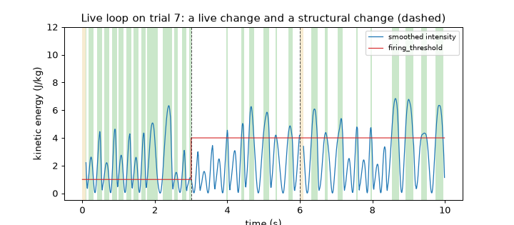
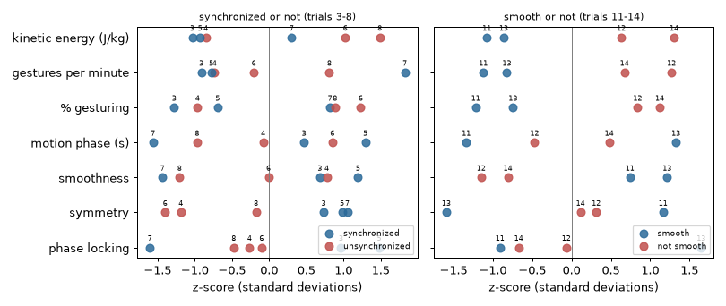

Note
Go to the end to download the full example code.
Capstone: a pipeline#
This tutorial puts the previous ones together in two ways. First a live loop: a chain of four features is fed one frame at a time, as it would be from a motion-capture stream, and a parameter is changed while it runs. Then a batch analysis: features from three layers are computed for a set of recordings, collected in a table with pandas, and used to compare the conditions of the example session with a plain nearest-centroid rule and a plot.
- Goals:
chain features with
processand change a parameter of a running feature (live versus structural); check that a live loop andrungive the same numbers; turn the outputs of several features into one row per recording; compare conditions with standardised features, a plot and a leave-one-out nearest-centroid rule written in numpy.- Prerequisites:
The contract every feature follows; the tutorials by layer are used here but not required (they are listed in the last section).
- Data:
trials 3 to 8 (three tasks, each performed synchronized and unsynchronized), seconds 5 to 21, trial 7 for the live loop, and trials 11 to 14 (smooth and not smooth movement), seconds 0 to 12, of the example session.
- Time:
about 30 minutes.
A live loop#
In a live set-up there is no recording to hand to run: a frame arrives, the features are updated, the next frame arrives.
Each call of process takes one frame and returns a Result; every feature remembers what
it needs between calls (see Results, statuses and recorders). Here the chain is the one of the gesture tutorial,
skeleton -> KineticEnergy -> MotionNoiseDetector
-> GestureSegmenter -> MotionDuration
The kinetic energy of the body is the intensity that the segmenter thresholds to find gestures (energy per unit of mass, see
Kinematics and energy). MotionNoiseDetector sets is_noisy when the speeds of a joint jump at random, as
with a tracker that loses a marker, and its flag is fed directly to the noise input of the segmenter: True means
noise, and no gesture can start while it is set. With several joints, only the joint whose name comes last in alphabetical
order decides the flag (Spine for the 20 joints used here), see the class description. MotionDuration turns the
on/off signal is_gesturing into the length of each phase of motion and of pause (Gesture segmentation).
The recording is trial 7 (clapping hands) in metres; time is in seconds. A Recorder collects the results of a loop
with append, which is all that run does for you.
import matplotlib.pyplot as plt
import numpy as np
from helpers import shade_status
from pyeyesweb.data_models import Recorder
from pyeyesweb.datasets import load_qualisys_trial
from pyeyesweb.low_level import KineticEnergy, MotionNoiseDetector
from pyeyesweb.mid_level import GestureSegmenter, MotionDuration
RATE = 100 # Hz, the sampling rate of the recordings
trial = load_qualisys_trial(7, start=5, stop=15).to_units("m")
time = trial.timestamps
def make_pipeline():
"""The four features, built from the skeleton of the trial."""
return (KineticEnergy(skeleton=trial.skeleton, sampling_rate=RATE),
MotionNoiseDetector(skeleton=trial.skeleton, sampling_rate=RATE),
GestureSegmenter(firing_threshold=1.0),
MotionDuration(sampling_rate=RATE))
energy, noise, segmenter, durations = make_pipeline()
print(segmenter.inputs)
Inputs(intensity: sample (1) - intensity of the motion, e.g. its kinetic energy, noise: sample (1) - 1 while the motion is judged to be noise (no gesture) (default 0))
The loop is four calls per frame. At 3 s we make the segmenter less sensitive by raising its firing_threshold from 1 to 4
(a live parameter: the new value is used from the next call and nothing is lost). At 6 s we change
filter_window_length, the smoothing of the segmenter, from 9 to 7 samples (a structural parameter: it shapes the
state of the filter, so the segmenter restarts, and the reason of the next result says so). The rule is in
Time, units and parameters, and the page of each feature marks its parameters (live) or (structural).
log = Recorder(segmenter)
thresholds, motion = [], []
for frame, stamp in zip(trial.positions, time):
if np.isclose(stamp, 3.0):
segmenter.firing_threshold = 4.0 # live: used from the next call, the state is kept
if np.isclose(stamp, 6.0):
segmenter.filter_window_length = 7 # structural: the segmenter restarts and warms up again
ke = energy.process(frame, timestamp=stamp)
flag = noise.process(frame, timestamp=stamp)
gesture = segmenter.process(ke.kinetic_energy, flag.is_noisy, timestamp=stamp)
phase = durations.process(float(gesture.is_gesturing), timestamp=stamp)
log.append(gesture)
thresholds.append(segmenter.firing_threshold)
motion.append(phase.motion_duration)
changed = [(round(float(time[i]), 2), reason) for i, reason in enumerate(log.reasons) if "state reset" in reason]
print("results with a state reset:", changed)
print("WARMING_UP rows after the restart:", int(((log.status == 1) & (time > 6.0)).sum()))
print("parameters now:", segmenter.parameters)
motion = np.array(motion)
print("motion phases that ended during the loop:", int(np.isfinite(motion).sum()))
results with a state reset: [(6.0, 'parameters changed: state reset; window filling')]
WARMING_UP rows after the restart: 9
parameters now: {'firing_threshold': 4.0, 'filter_window_length': 7}
motion phases that ended during the loop: 30
The figure shows the smoothed intensity that the segmenter thresholds, the threshold, and the gestures it finds (green). After the first dashed line, the raised threshold lets only the strongest stretches count as gestures, with no gap in the signal; after the second the segmenter warms up again for a few samples (yellow).
fig, ax = plt.subplots(figsize=(8, 3.5))
ax.plot(time, log.smoothed_intensity, lw=1, color="C0", label="smoothed intensity")
ax.step(time, thresholds, where="post", color="C3", lw=0.9, label="firing_threshold")
edges = np.flatnonzero(np.diff(np.r_[0, np.asarray(log.is_gesturing).astype(int), 0]))
for a, b in zip(edges[::2], edges[1::2]):
ax.axvspan(time[a], time[min(b, len(time) - 1)], color="C2", alpha=0.25, lw=0)
shade_status(ax, time, log.status, codes=(1,))
for moment in (3.0, 6.0):
ax.axvline(moment, color="0.3", ls="--", lw=0.8)
ax.set_ylim(-0.5, 12)
ax.set_xlabel("time (s)")
ax.set_ylabel("kinetic energy (J/kg)")
ax.legend(loc="upper right", fontsize=8)
ax.set_title("Live loop on trial 7: a live change and a structural change (dashed)")

Text(0.5, 1.0, 'Live loop on trial 7: a live change and a structural change (dashed)')
Takeaway. A live parameter changes a running feature at once and keeps its state; a structural one restarts it, and the
reason of the first result after the change says so.
The loop and run agree#
run is defined as reset() followed by a loop of process, so a live loop must give the numbers of the batch call
as long as no parameter changes. We check it on the first three seconds, before the first change, with a fresh pipeline.
energy, noise, segmenter, durations = make_pipeline()
first = slice(0, 300)
batch_energy = energy.run(trial.positions[first], timestamps=time[first]).kinetic_energy
batch_noise = noise.run(trial.positions[first], timestamps=time[first]).is_noisy
batch = segmenter.run(batch_energy, batch_noise, timestamps=time[first])
print("same smoothed intensity as the live loop:", np.allclose(batch.smoothed_intensity, log.smoothed_intensity[first], equal_nan=True))
print("same gesture flags:", bool(np.array_equal(batch.is_gesturing, log.is_gesturing[first])))
same smoothed intensity as the live loop: True
same gesture flags: True
Takeaway. Develop a pipeline on recordings with run; the same features give the same numbers when they are fed one
frame at a time.
From recordings to a table#
To compare conditions we need one row of numbers per recording. Each column below comes from a different layer of the library (Layers and the catalog), and each is a summary over the whole excerpt:
kinetic energy(mean, J/kg):KineticEnergy, how much the whole body moves;gestures per minuteand% gesturing: the number of gesture starts and the share of time inside a gesture, from the segmenter of the chain above;motion phase(median, s):MotionDuration, the typical length of a gesture (0 if none ended);smoothness(median):SpectralArcLengthof the speed of the right hand, computed byKinematics, in windows of 2 s; it is negative and closer to 0 means smoother (Smoothness);symmetry(mean):Symmetry, 1 when the left and right joints mirror each other about the neck (Shape, symmetry and balance);phase locking(mean):PhaseLockingValueof the heights of the two hands, band-passed to 0.5-3 Hz, in windows of 3 s; 1 when the two hands stay in step (Synchronization).
One function returns the row of a trial. It builds fresh features for every trial, so no state is shared between trials.
import pandas as pd
from helpers import vertical_axis
from pyeyesweb.analysis_primitives import PhaseLockingValue
from pyeyesweb.low_level import Kinematics, SpectralArcLength, Symmetry
def trial_row(number, start, stop):
"""Summary features of one trial of the example session, seconds ``start`` to ``stop`` of the recording."""
data = load_qualisys_trial(number, start=start, stop=stop).to_units("m")
stamps, positions, skeleton = data.timestamps, data.positions, data.skeleton
intensity = KineticEnergy(skeleton=skeleton, sampling_rate=RATE).run(positions, timestamps=stamps).kinetic_energy
flag = MotionNoiseDetector(skeleton=skeleton, sampling_rate=RATE).run(positions, timestamps=stamps).is_noisy
gestures = GestureSegmenter(firing_threshold=1.0).run(intensity, flag, timestamps=stamps)
phases = MotionDuration(sampling_rate=RATE).run(gestures.is_gesturing.astype(float), timestamps=stamps).motion_duration
speed = Kinematics(sampling_rate=RATE).run(data.joint("Right_Hand"), timestamps=stamps).velocity
arc = SpectralArcLength(window=200, hop=100, sampling_rate=RATE).run(np.asarray(speed), timestamps=stamps)
symmetry = Symmetry(skeleton=skeleton, reference_point="Neck").run(positions).symmetry
up = vertical_axis(data)
locking = PhaseLockingValue(window=300, hop=50, low_frequency=0.5, high_frequency=3.0, sampling_rate=RATE).run(
data.joint("Left_Hand")[:, up], data.joint("Right_Hand")[:, up], timestamps=stamps)
return {
"trial": number, "task": data.task, "condition": data.condition,
"kinetic energy (J/kg)": np.mean(intensity),
"gestures per minute": 60.0 * gestures.is_gesture_start.sum() / data.duration,
"% gesturing": 100.0 * gestures.is_gesturing.mean(),
"motion phase (s)": float(np.nanmedian(phases)) if np.isfinite(phases).any() else 0.0,
"smoothness": np.median(arc.spectral_arc_length[arc.ok]),
"symmetry": np.mean(symmetry),
"phase locking": np.mean(locking.phase_locking_value[locking.ok]),
}
FEATURES = ["kinetic energy (J/kg)", "gestures per minute", "% gesturing", "motion phase (s)", "smoothness", "symmetry",
"phase locking"]
synchronization = pd.DataFrame([trial_row(number, 5, 21) for number in (3, 4, 5, 6, 7, 8)]).set_index("trial")
smoothness = pd.DataFrame([trial_row(number, 0, 12) for number in (11, 12, 13, 14)]).set_index("trial")
print(synchronization.round(2).to_string())
print()
print(smoothness.round(2).to_string())
task condition kinetic energy (J/kg) gestures per minute % gesturing motion phase (s) smoothness symmetry phase locking
trial
3 Open the window synchronized 0.46 11.25 11.56 0.62 -1.99 0.89 0.83
4 Open the window unsynchronized 0.73 26.25 20.31 0.49 -1.95 0.73 0.59
5 Breathing arms synchronized 0.62 22.50 27.88 0.82 -1.75 0.91 0.93
6 Breathing arms unsynchronized 3.53 71.25 81.50 0.71 -2.32 0.72 0.63
7 Clapping hands synchronized 2.46 243.75 70.00 0.14 -2.99 0.91 0.34
8 Clapping hands unsynchronized 4.23 157.50 71.88 0.28 -2.88 0.81 0.55
task condition kinetic energy (J/kg) gestures per minute % gesturing motion phase (s) smoothness symmetry phase locking
trial
11 Infinite gesture (figure eight) smooth 0.13 0.0 0.00 0.00 -2.09 0.76 0.48
12 Infinite gesture (figure eight) not smooth 3.40 80.0 48.83 0.22 -2.47 0.67 0.58
13 Caress a delicate surface smooth 0.54 10.0 11.25 0.68 -2.00 0.47 0.77
14 Caress a delicate surface not smooth 4.69 60.0 55.50 0.46 -2.40 0.65 0.51
Two comparisons of the session: the first six trials differ in whether the two arms act together (synchronized) or not (unsynchronized), in three different tasks; the last four in whether the movement is smooth or not, in two tasks. The tasks differ in speed and in how much of the body moves, so the columns are not comparable across tasks and a single trial is never a measure of a condition. The next step puts each column on a common scale.
Standardised features#
The columns have different units and sizes. A z-score subtracts the mean of the column over the trials of the comparison and divides by their standard deviation, so each feature is in units of “spread across these trials” and 0 is the average trial. The z-score uses no condition labels. The figure draws one marker per trial and feature, coloured by condition.
def zscores(table):
"""The feature columns of ``table`` as z-scores (mean 0, standard deviation 1 over the rows)."""
values = table[FEATURES]
return (values - values.mean()) / values.std(ddof=0)
groups = {"synchronized or not (trials 3-8)": synchronization, "smooth or not (trials 11-14)": smoothness}
colors = {"synchronized": "#2b6a99", "unsynchronized": "#c0504d", "smooth": "#2b6a99", "not smooth": "#c0504d"}
fig, axes = plt.subplots(1, 2, figsize=(9, 3.8), sharey=True)
for ax, (title, table) in zip(axes, groups.items()):
z = zscores(table)
for row, name in enumerate(FEATURES):
for number in table.index:
condition = table.loc[number, "condition"]
ax.plot(z.loc[number, name], row, "o", color=colors[condition], ms=7, alpha=0.85,
label=condition if row == 0 else None)
ax.annotate(str(number), (z.loc[number, name], row), xytext=(0, 6), textcoords="offset points", ha="center",
fontsize=6)
ax.axvline(0, color="0.5", lw=0.8)
ax.set_yticks(range(len(FEATURES)), FEATURES)
ax.set_xlabel("z-score (standard deviations)")
ax.set_title(title, fontsize=9)
handles, labels = ax.get_legend_handles_labels()
unique = dict(zip(labels, handles))
ax.legend(unique.values(), unique.keys(), loc="lower right", fontsize=7)
axes[0].invert_yaxis()
fig.tight_layout()

Takeaway. On a common scale the features show, one by one, on which side of the average each trial lies; markers of a condition that sit together in a row are a feature that goes with that condition in these trials.
A nearest-centroid comparison#
The simplest rule that uses all the features at once: the centroid of a condition is the mean of the z-scores of its trials; a trial is assigned to the condition whose centroid is nearest (Euclidean distance over the seven features). To avoid judging a trial with itself, each trial is left out in turn (leave-one-out) and assigned with the centroids of the other trials. With so few trials this is a way to look at the features together, not an estimate of how well the conditions could be told apart in general.
def leave_one_out(table):
"""Condition assigned to each trial from the centroids of the other trials (z-scores, Euclidean distance)."""
z = zscores(table).to_numpy()
conditions = table["condition"].to_numpy()
rows = []
for held_out in range(len(table)):
rest = np.arange(len(table)) != held_out
names = sorted(set(conditions[rest]))
distance = {name: np.linalg.norm(z[held_out] - z[rest & (conditions == name)].mean(axis=0)) for name in names}
rows.append({"trial": table.index[held_out], "condition": conditions[held_out],
**{f"distance to {name}": value for name, value in distance.items()},
"assigned": min(distance, key=distance.get)})
return pd.DataFrame(rows).set_index("trial")
for title, table in groups.items():
result = leave_one_out(table)
print(title)
print(result.round(2).to_string())
print(f"assigned to their own condition: {int((result.condition == result.assigned).sum())} of {len(result)}\n")
synchronized or not (trials 3-8)
condition distance to synchronized distance to unsynchronized assigned
trial
3 synchronized 2.55 3.36 synchronized
4 unsynchronized 2.49 3.42 synchronized
5 synchronized 3.34 3.78 synchronized
6 unsynchronized 3.36 2.16 unsynchronized
7 synchronized 5.62 3.64 unsynchronized
8 unsynchronized 3.32 3.14 unsynchronized
assigned to their own condition: 4 of 6
smooth or not (trials 11-14)
condition distance to not smooth distance to smooth assigned
trial
11 smooth 4.40 4.67 not smooth
12 not smooth 1.52 4.01 not smooth
13 smooth 4.84 4.67 smooth
14 not smooth 1.52 4.11 not smooth
assigned to their own condition: 3 of 4
The printed counts are all the code claims: they are counts on a handful of takes by one performer. The distances show how clear each assignment is, and a trial whose two distances are close is a trial that the features do not settle. To see which features carry a comparison, repeat it with one feature at a time: the table lists, for each feature, how many trials its z-score alone assigns to their own condition with the same centroid rule.
for title, table in groups.items():
z = zscores(table)
conditions = table["condition"].to_numpy()
own = {}
for name in FEATURES:
values = z[name].to_numpy()
hits = 0
for held_out in range(len(table)):
rest = np.arange(len(table)) != held_out
centroid = {c: values[rest & (conditions == c)].mean() for c in set(conditions[rest])}
hits += min(centroid, key=lambda c: abs(values[held_out] - centroid[c])) == conditions[held_out]
own[name] = f"{hits} of {len(table)}"
print(title)
print(pd.Series(own, name="own condition").to_string())
print()
synchronized or not (trials 3-8)
kinetic energy (J/kg) 4 of 6
gestures per minute 1 of 6
% gesturing 4 of 6
motion phase (s) 1 of 6
smoothness 1 of 6
symmetry 5 of 6
phase locking 4 of 6
smooth or not (trials 11-14)
kinetic energy (J/kg) 4 of 4
gestures per minute 4 of 4
% gesturing 4 of 4
motion phase (s) 0 of 4
smoothness 4 of 4
symmetry 2 of 4
phase locking 1 of 4
Takeaway. A table of features from several layers, standardised, is enough to compare conditions in a few lines; the counts say how the features behave on these trials, and more recordings are needed to say more.
Try it#
In the live loop, lower the threshold again at 8 s (
firing_threshold = 0.5) and print the number of gesture starts in each of the three stretches of the trial (before 3 s, 3 s to 8 s, after 8 s).Add two columns to the first table: the median pause (
pause_durationofMotionDuration) and theSymmetrywithmethod="reflection". Do the assignments of the leave-one-out rule change?Trials 10 and 19 are other tasks (a squat with weight shift, balance on tiptoes). Compute their rows with
trial_rowand print which centroid of the first comparison each is nearer to, with the z-scores made from the means and standard deviations of trials 3 to 8. What does the answer say about a rule that always names one of two conditions?
Solutions#
Exercise 1. The same loop with a third threshold; the gesture starts are counted per stretch.
energy, noise, segmenter, durations = make_pipeline()
starts = []
for frame, stamp in zip(trial.positions, time):
if np.isclose(stamp, 3.0):
segmenter.firing_threshold = 4.0
if np.isclose(stamp, 8.0):
segmenter.firing_threshold = 0.5
ke = energy.process(frame, timestamp=stamp)
gesture = segmenter.process(ke.kinetic_energy, noise.process(frame, timestamp=stamp).is_noisy, timestamp=stamp)
starts.append(bool(gesture.is_gesture_start))
starts = np.array(starts)
for label, (a, b) in {"before 3 s": (0, 3), "3 s to 8 s": (3, 8), "after 8 s": (8, 10)}.items():
print(f"{label:<11} gesture starts: {int(starts[int(a * RATE):int(b * RATE)].sum())}")
before 3 s gesture starts: 14
3 s to 8 s gesture starts: 12
after 8 s gesture starts: 6
Exercise 2. Two extra columns, then the same leave-one-out rule over nine features.
def extra_columns(number):
data = load_qualisys_trial(number, start=5, stop=21).to_units("m")
stamps = data.timestamps
intensity = KineticEnergy(skeleton=data.skeleton, sampling_rate=RATE).run(data.positions, timestamps=stamps).kinetic_energy
gestures = GestureSegmenter(firing_threshold=1.0).run(intensity, timestamps=stamps)
pauses = MotionDuration(sampling_rate=RATE).run(gestures.is_gesturing.astype(float), timestamps=stamps).pause_duration
reflection = Symmetry(skeleton=data.skeleton, method="reflection").run(data.positions).pair_symmetry
return {"pause (s)": float(np.nanmedian(pauses)) if np.isfinite(pauses).any() else 0.0,
"reflection symmetry": float(np.mean(reflection))}
extended = synchronization.join(pd.DataFrame({number: extra_columns(number) for number in synchronization.index}).T)
FEATURES = FEATURES + ["pause (s)", "reflection symmetry"]
result = leave_one_out(extended)
FEATURES = FEATURES[:-2]
print(extended[["pause (s)", "reflection symmetry"]].round(2).to_string())
print("assigned to their own condition:", int((result.condition == result.assigned).sum()), "of", len(result))
pause (s) reflection symmetry
trial
3 4.54 0.97
4 0.81 0.87
5 1.61 0.97
6 0.13 0.82
7 0.07 0.97
8 0.07 0.91
assigned to their own condition: 4 of 6
Exercise 3. The centroids come from trials 3 to 8; a new trial is standardised with their means and spreads.
training = synchronization[FEATURES]
z_training = zscores(synchronization)
centroids = {name: z_training[synchronization.condition == name].mean() for name in ("synchronized", "unsynchronized")}
for number in (10, 19):
row = pd.Series(trial_row(number, 5, 16))[FEATURES].astype(float)
z = (row - training.mean()) / training.std(ddof=0)
distances = {name: round(float(np.linalg.norm(z - centroid)), 2) for name, centroid in centroids.items()}
print(f"trial {number}: {distances} -> {min(distances, key=distances.get)}")
trial 10: {'synchronized': 3.01, 'unsynchronized': 4.07} -> synchronized
trial 19: {'synchronized': 2.82, 'unsynchronized': 2.96} -> synchronized
The rule answers with one of the two conditions it knows, whatever the trial; the size of the distances is what shows how far a trial is from both, so read them and not only the label.
Next steps#
This tutorial used features of the points, the low and mid levels and the analysis primitives. Each tutorial below covers one layer in depth:
Your first feature and The contract every feature follows: the first feature and the rules every feature follows.
Physical signals: points and models and Physical signals: images: signals from points and from images.
Low level: motion and smoothness and Low level: shape and posture: motion, smoothness and the shape of the body.
Gestures and qualities: gestures, suddenness and impulsivity.
Analysis primitives: complexity, rarity, periodicity, Synchronization of continuous signals and Synchronization of events: entropy, rarity, periodicity and synchronization.
Batch a recording to pandas, A real-time loop with live parameters and Load the example data: the recipes behind this tutorial.
Mid-level features and API reference: the features and their parameters.
Total running time of the script: (0 minutes 9.537 seconds)